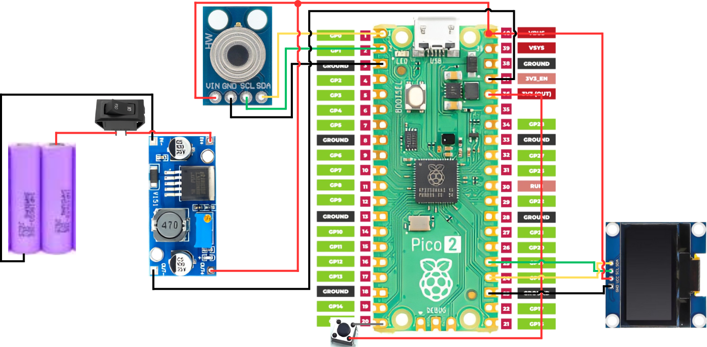
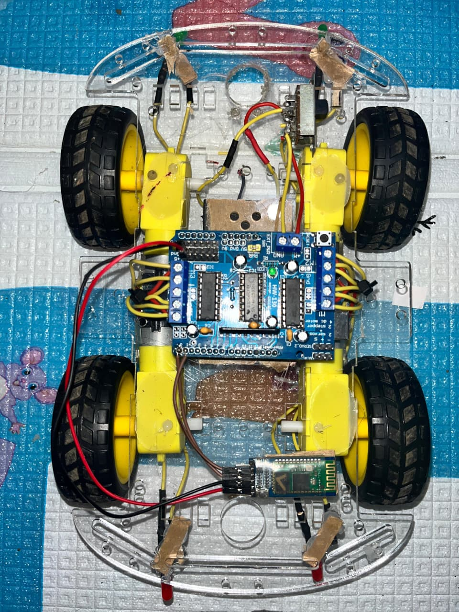
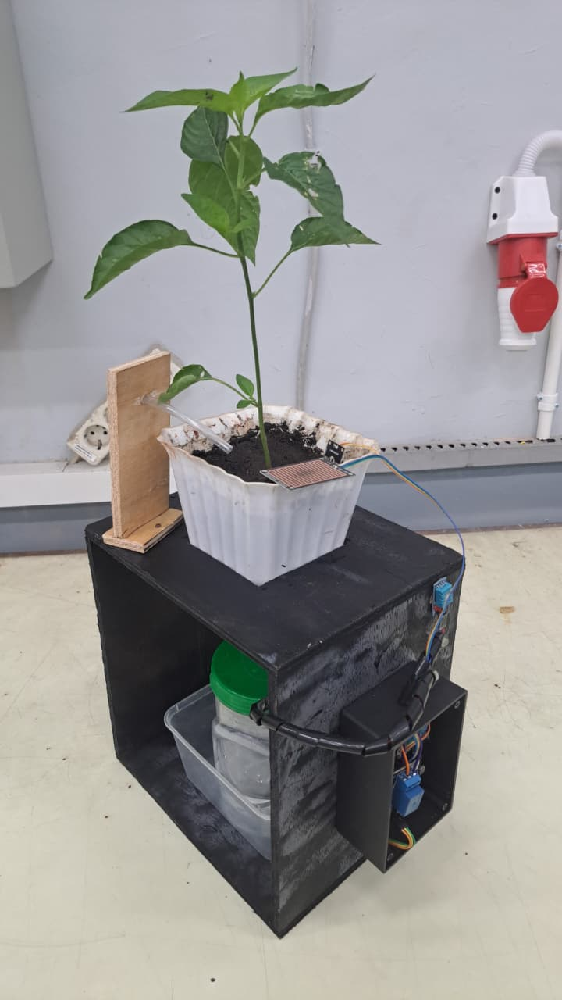
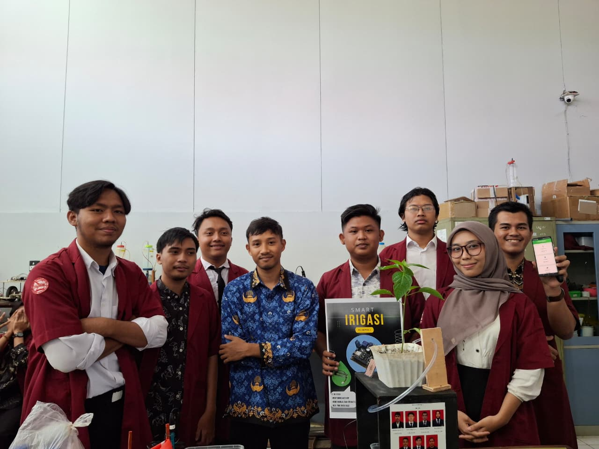
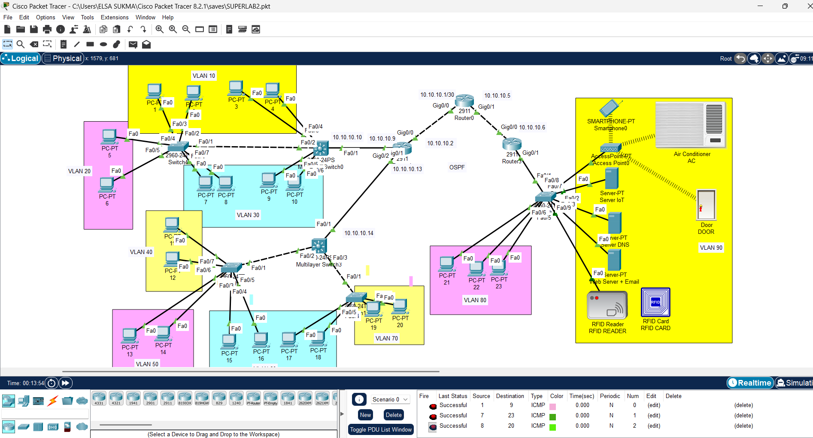
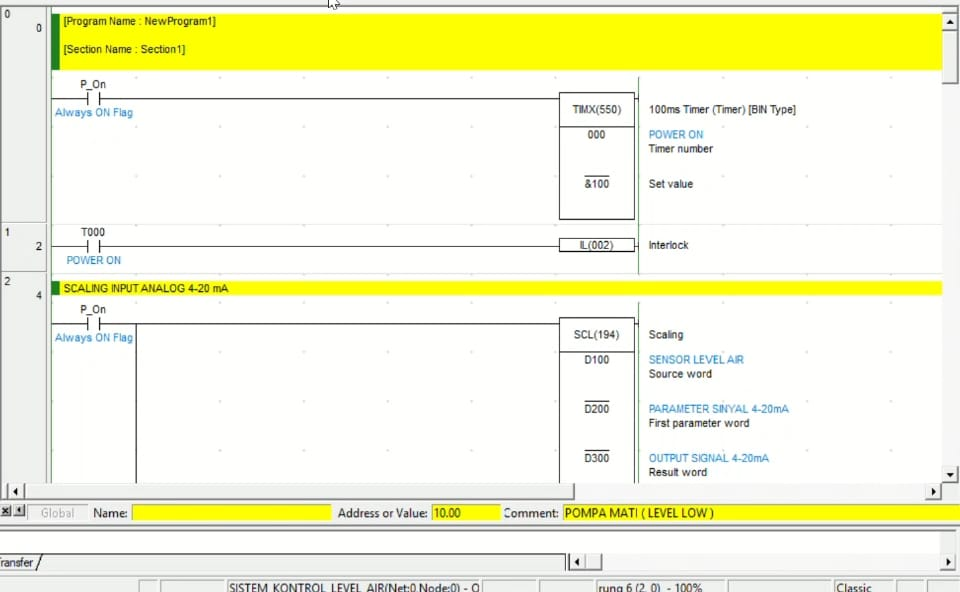
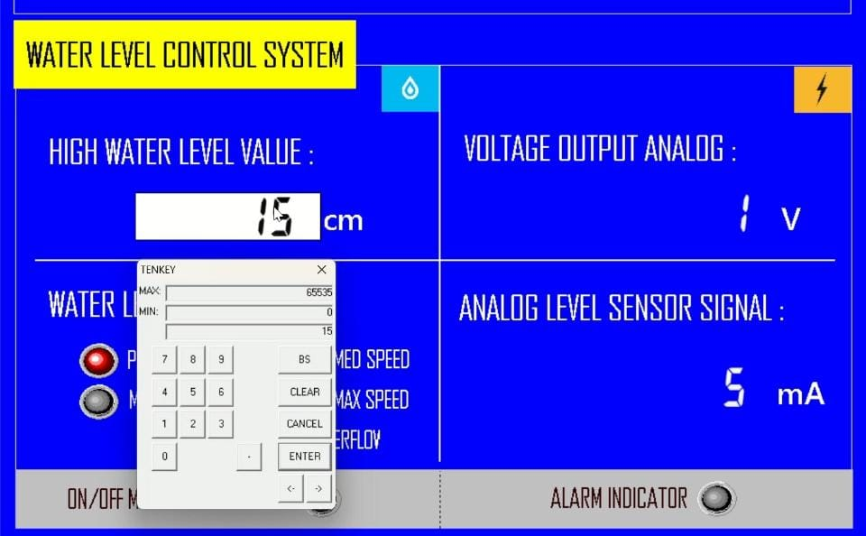
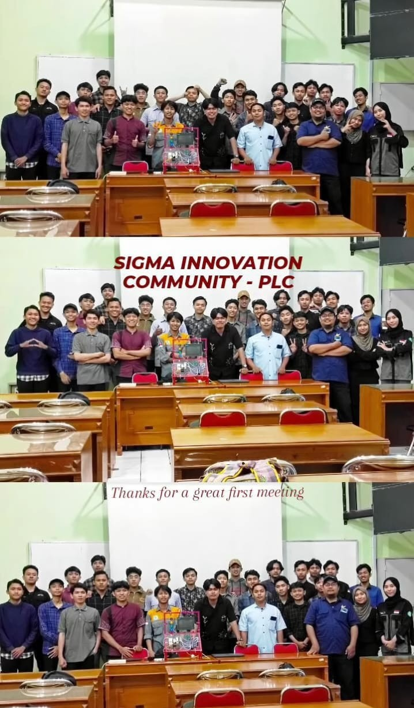

Proyek Teknis
Proyek embedded systems, robotika, dan jaringan komputer yang telah dikerjakan.
Juni 2026
Alat Bantu Gerak Difabel Berbasis Gestur Wajah
- Simulasi kursi roda cerdas untuk penyandang kelumpuhan, dikendalikan via ekspresi/gestur wajah tanpa kontak fisik.
- Deteksi gestur wajah real-time menggunakan MediaPipe & OpenCV pada Raspberry Pi 4B.
- Sensor ultrasonik HC-SR04 untuk obstacle avoidance otomatis.
- Diuji pada robot mobil fisik (trainer kit) sebagai proof-of-concept.
Mei 2026
Robot Pengikut TurtleBot3 dengan Navigasi SLAM
- Robot pengikut otonom berbasis TurtleBot3, stack ROS2 Nav2, Raspberry Pi + OpenCR.
- Pemetaan SLAM untuk lokalisasi real-time & perencanaan jalur otonom indoor.
- Integrasi LiDAR dengan Nav2 untuk deteksi rintangan & rerouting dinamis.
Juni 2026

Termometer Nirsentuh Higienis untuk Dapur Profesional
- Alat pengukur suhu makanan nirsentuh berbasis Raspberry Pi Pico & sensor MLX90614 (GY906).
- Menghilangkan risiko kontaminasi silang dibanding termo kontak konvensional.
2026
Proyek Tim • Kontribusi Campuran


Robot Naik Tangga dengan Roda Segitiga Custom
- Robot mobile yang mampu menaiki anak tangga menggunakan mekanisme roda berbentuk segitiga rancangan sendiri, didesain agar sisi-sisi roda dapat mencengkeram tepi anak tangga secara bertahap saat berputar.
- Dikendalikan oleh mikrokontroler ESP32 dengan motor driver L298N untuk mengatur torsi dan arah putaran motor DC penggerak roda.
- Tantangan utama pada penyeimbangan torsi motor agar roda segitiga tidak slip saat mencengkeram permukaan tangga di berbagai sudut kemiringan.
2026
Proyek Tim • Kontribusi Campuran

Mobil RC Berbasis Kendali Bluetooth
- Mobil remote control yang dikendalikan dari aplikasi Android melalui koneksi Bluetooth, menggunakan modul HC-05/HC-06.
- Mikrokontroler Arduino/ESP32 menerima perintah arah dan kecepatan dari aplikasi, lalu meneruskannya ke motor driver penggerak roda.
2026
Proyek Tim • Kontribusi Campuran

Water Level Control Berbasis PID dengan Sensor ToF
- Sistem kendali ketinggian air otomatis menggunakan sensor Time-of-Flight (ToF) untuk membaca level air secara presisi.
- Algoritma kendali PID pada Arduino digunakan untuk mengatur kecepatan pompa agar ketinggian air tetap stabil pada setpoint yang ditentukan, meminimalkan overshoot dan osilasi.
2026
Proyek Tim • Kontribusi Campuran


Smart Irrigation System Berbasis ESP8266
- Sistem penyiraman otomatis menggunakan sensor soil moisture dan raindrop sensor untuk mendeteksi kelembapan tanah dan curah hujan secara real-time.
- Logika kendali otomatis menyalakan/mematikan pompa berdasarkan ambang batas kelembapan, dengan raindrop sensor sebagai pencegah penyiraman saat hujan turun.
- Mikrokontroler ESP8266 sebagai pusat akuisisi data sensor dan aktuasi pompa.
2026
Proyek Mata Kuliah Jaringan Komputer

Superlab — Rancang Bangun Jaringan Enterprise Berbasis Cisco Packet Tracer
- Merancang dan mengimplementasikan topologi jaringan skala perusahaan dengan 9 segmen VLAN, 3 router, dan 2 Core Switch menggunakan Cisco Packet Tracer.
- Konfigurasi penuh end-to-end: VLAN tagging & trunking 802.1Q, DHCP per VLAN, routing dinamis OSPF multi-router (area 0), serta Extended ACL untuk membatasi akses antar VLAN ke server.
- Membangun dan mengonfigurasi layanan jaringan: DNS Server, Web Server (custom HTML), Email Server (SMTP/POP3), dan IoT Server untuk kontrol RFID Reader, smart door lock, dan AC otomatis.
- Mengerjakan seluruh proses konfigurasi teknis secara mandiri, mencakup desain addressing, troubleshooting konektivitas, hingga dokumentasi jobsheet.
2025


Sistem Otomasi Penanganan Banjir
- Simulasi monitoring ketinggian air & sekuensing pompa pakai PLC Omron + HMI CX-Designer.
- Logika kendali closed-loop yang dapat diterapkan ke otomasi proses industri nyata.
2025

Modul Pelatihan Hardware PLC-HMI
- Membangun kit trainer fisik dari komponen dasar — wiring, skematik, panel, integrasi sistem.
- Diadopsi sebagai platform pembelajaran utama Sigma Innovation Community.
2024
Sistem Deteksi & Pemadam Kebakaran
- Prototipe sistem proteksi kebakaran otomatis pakai sensor IR & Arduino.
- Integrasi deteksi, alarm, dan aktuasi pemadam dalam satu sekuens closed-loop.
2025
Sistem Cuci Mobil Otomatis
- Otomasi terintegrasi sensor-aktuator pakai Ladder Logic & HMI NB Designer.
- Kendali sekuens penuh dari deteksi kendaraan masuk hingga siklus cuci & pengeringan.